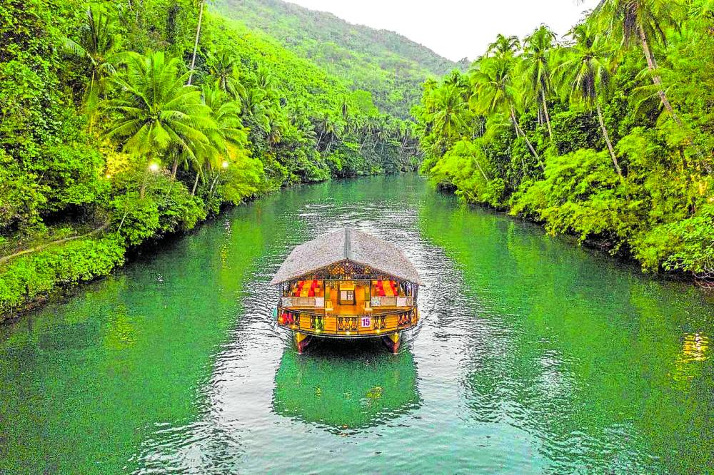

Loboc River Cruise
Abatan River Firefly
Philippine Tarsier
Ingkhuman Falls
Chocolate Hills

| Bohol's Location: | Central Visayas region | |
| Hotels in bohol: | Cost: | |
| Bohol South Beach Hotel | A contemporary hotel with an infinity pool, a restaurant & a rooftop bar, plus direct beach access, for ₱1,573 per night. | |
| Ocean Suites Boutique Hotel | a hotel offering dining & an infinity pool with sea views, for ₱2,106 per night. | |
| MS Mountain Cabin | for ₱1,378 per night. | |
| Belian Hotel | a hotel overlooking the sea, featuring a restaurant, for ₱1,599 per night. | |
| Panglao Tropical Villas | A relaxed beach resort featuring a restaurant/bar, a pool & a garden, for ₱1,255 per night. | |